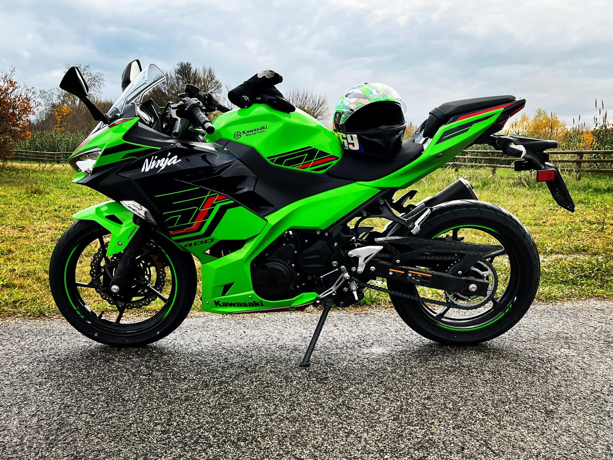

Ciao a tutti! Sono Giulio e sono nato e cresciuto a Latisana, in provincia di Udine, il 16 giugno 1991.
Ho frequentato il Liceo Scientifico E.L. Martin dove mi sono diplomato nel 2010 con votazione 100/100. Ho
studiato medicina per due anni ma a causa di un problema di salute e con i rigidi sbarramenti che erano
presenti
nel corso di laurea ho dovuto abbandonare. Ho lavorato per due anni come rider e come baby sitter stagionale
part-time, mentre la mia salute tornava alla normalità, prima di ricominciare l'università a 23 anni. A 29
anni
mi sono laureato con 110/110 e lode in Chimica e Tecnologia Farmaceutiche. Ho cercato lavoro nell'ambito del
drug design/drug discovery sia nel settore accademico che in quello privato ma non ho avuto successo. Mi
sono
quindi messo a fare il farmacista ma l'ho trovato un lavoro che mi faceva sentire poco realizzato e non
molto
diverso da un "commerciante con il camice bianco". In me è quindi nato il desiderio di ambire a
qualcos'altro,
qualcosa che mi potesse regalare una professione che potevo amare. Forte della programmazione studiata al
Liceo
Scientifico, ho usato le mie basi per studiare da autodidatta un po' di HTML, CSS, Javascript, PHP e MYSQL e
alla fine... Eccomi qua!
Sono una persona con numerosi interessi. Innanzitutto il coding, certo arrivato (o ritornato?) per ultimo, che trovo creativo ed affascinante. Mi piace molto l'alpinismo, e ho conquistato la vetta di numerose tra le alpi carniche e del cadore. Mi piace il motociclismo e nel mio garage ho due Kawasaki Ninja: una ZX6R del 98 da 108 CV e una 400 da 45 CV del 2023. Con la prima mi diverto, con la seconda viaggio e faccio tanti chilometri consumando poco... e mi diverto anche in questo caso. Mi piace uscire con gli amici e condividere una cena insieme. Mi piacciono il cinema e le serie TV. E mi piace cantare.
Sono una persona che si definisce un ibrido introverso-estroverso, anima della festa in un contesto, fortemente introspettivo in un contesto differente. Sono intuitivo e molto creativo, ho uno spirito da "inventore" e credo fortemente nel valore dell'innovazione. Sono una persona emotiva, a tratti ansiosa, nell'ambiente giusto mi contraddistinguo pe la mia allegria. Non amo pianificare le cose, anche se magari un minimo va fatto, sono un improvvisatore nato e vivo molto sulla "cresta dell'onda". Credo nei valori dell'amicizia, del rispetto, dell'onestà e della forza d'animo. Concludo con questa frase di Samuel Beckett: "Ever tried. Ever failed. No matter. Try again. Fail again. Fail Better"
 LinkedInLe mie competenze:
- HTML: regole fondamentali
- CSS: box-model, positioning, flexbox, animazioni
- Javascript: da Hello World ad Ajax
- PHP: programmazione lato server di base
- MYSQL: gestione e manipolazione del database (INSERT, UPDATE, SELECT, DELETE ecc.)
Competenze da acquisire:
- Java: non lo conosco minimamente
- Programmazione lato server asincrona
- Utilizzo delle funzioni in SASS
Esperienze lavorative e formative
| Periodo | Tipo di esperienza | Esperienza |
| 2005 - 2010 | Studio, formazione | Liceo Scientifico E.L. Martin, Latisana (UD). |
| 2010 | Conseguimento titolo | Maturità Scientifica con votazione 100/100. |
| 2010 - 2012 | Studio, formazione | Corso di Laurea magistrale a Ciclo Unico in Medicina e Chirurgia. Studi non terminati |
| 2012 - 2014 | Lavoro | Rider: consegna pizze a domicilio |
| 2009 - 2013 | Lavoro | Baby sitter part time, stagionale |
| 2014 - 2021 | Studio, formazione | Corso di Laurea magistrale a Ciclo Unico in Chimica e Tecnologia Farmaceutiche |
| 2021 | Conseguimento titolo | Laurea magistrale a Ciclo Unico in Chimica e Tecnologia Farmaceutiche con votazione 110/110 e lode |
| novembre 2021 - dicembre 2022 | Lavoro | Farmacista collaboratore presso Farmacia dott. A. Comelli, San Michele al Tagliamento (VE) |
| gennaio 2023 - settembre 2023 | Lavoro | Farmacista collaboratore presso Farmacia San Giorgio SRL, San Michele al Tagliamento (VE) |